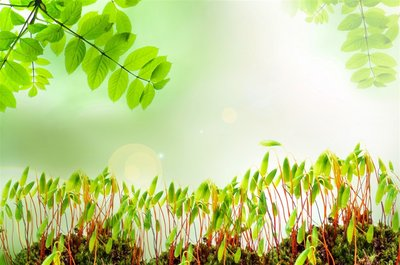
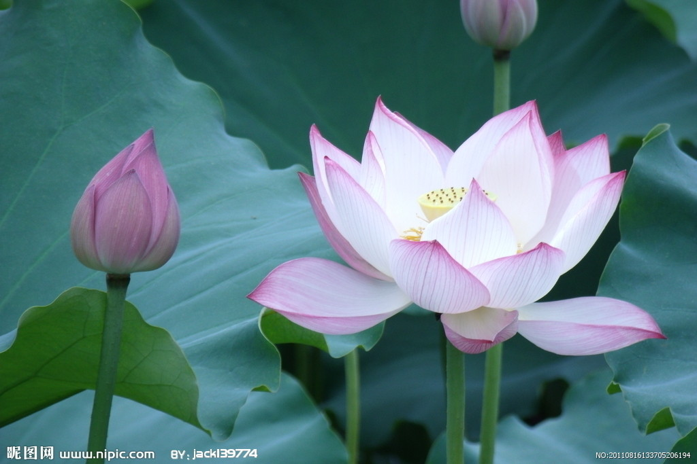
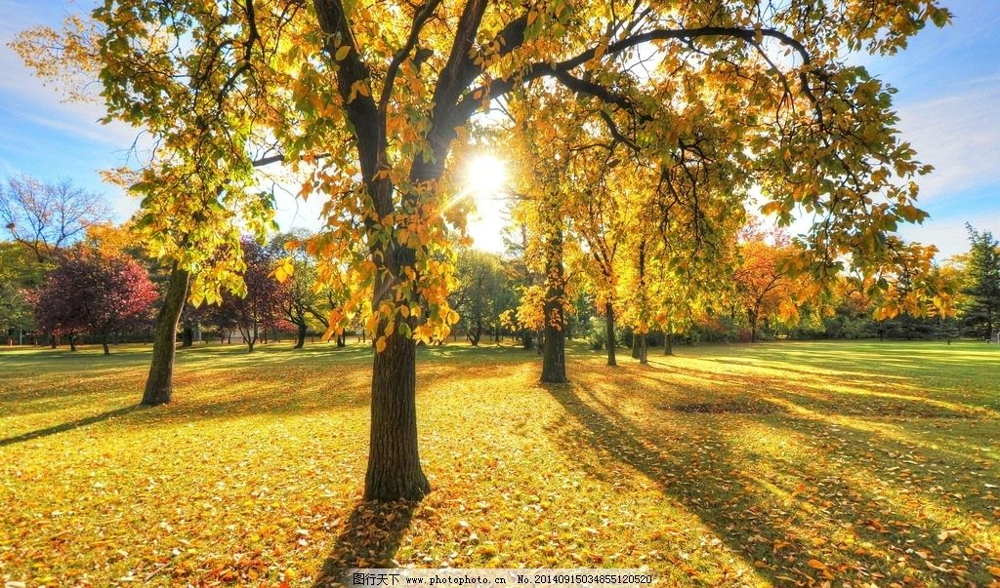

Spring

Summer
Winter

人生，总会有不期而遇的温暖，和生生不息的希望。
在哪里存在，就在哪里绽放。不要因为难过，就忘了散发芳香。
“如约而至”是个多么美好的词，等得辛苦，却不辜负。
不要着急，最好的总会在最不经意的时候出现。那我们要做的就是：怀揣希望去努力，静待美好的出现。
我在时光里享受温暖，我在流年里忘记花开。
做一个特别简单的人，不期待突如其来的好运，只希望所有的努力终有回报。
总有一段路，需要一个人走，那就勇敢地漫步，华丽地走完。
欢迎来到我的个人网页
一本书，一杯咖啡，一个故事
走进我的故事，了解我的旅途
你好！我是一名大学生，性格内向，生活中的我热爱旅游，喜欢不同的事物，想要了解更多的我吗？ 点击右边不同的事件轴，走进我的生活吧！！！
姓名：孔宪晨 性别：女
年龄：19 年级：大二
学校：中南财经政法大学
专业：信息管理与信息系统
QQ邮箱：2493226009@qq.com
联系电话：159****7040
通讯地址：湖北武汉
一声嘀哭，一条生命。学习是人一生的事业，我们从幼儿园的启蒙，到小学的初入课堂，再到中学的首次大考竞争， 逐步走入高中的旅程，经历了高考的洗礼，我们最终迈入大学的殿堂...
有趣的灵魂万里挑一，各种趣味让原本枯燥的生活有了不同的新鲜调味剂， 相信每个人都有自己所喜欢做的事情，那么生活中的我又是什么样的呢？
生活让我们不断成长不断收获，现在的我已经是一名大二的学生，即将进入大三， 在过去两年的大学生活中，我参与各种活动，也体会到了大学的魅力，那我到底收获了些什么呢？
事件轴来到了末尾，相信你已经对我有了初步的印象，现在让我们做一个小小调查， 让我来走进你的世界，了解你是什么样子的呢...